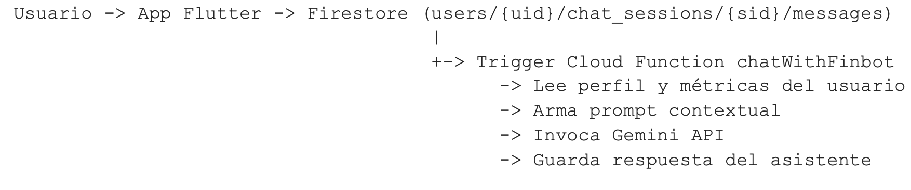
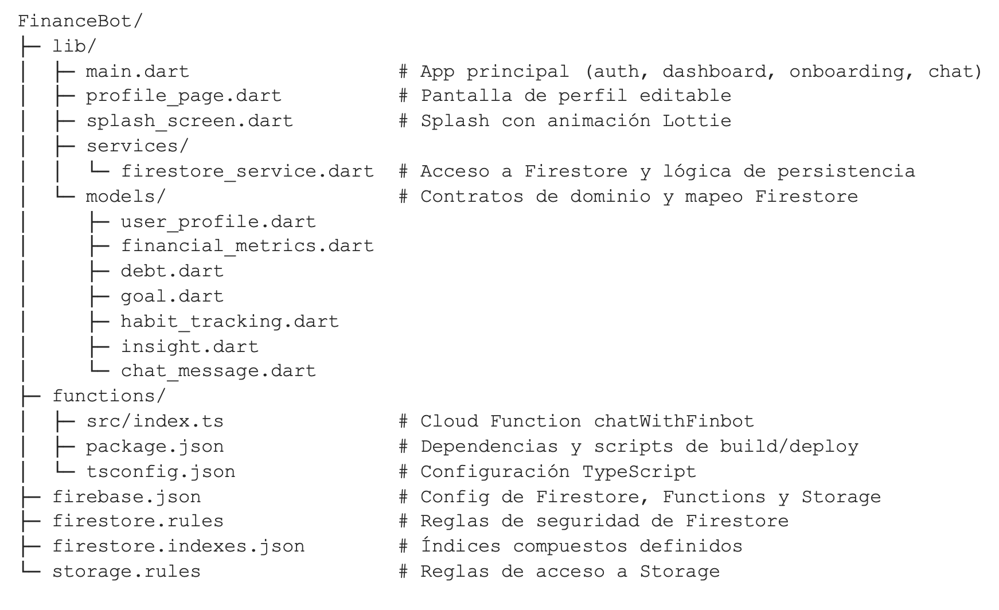
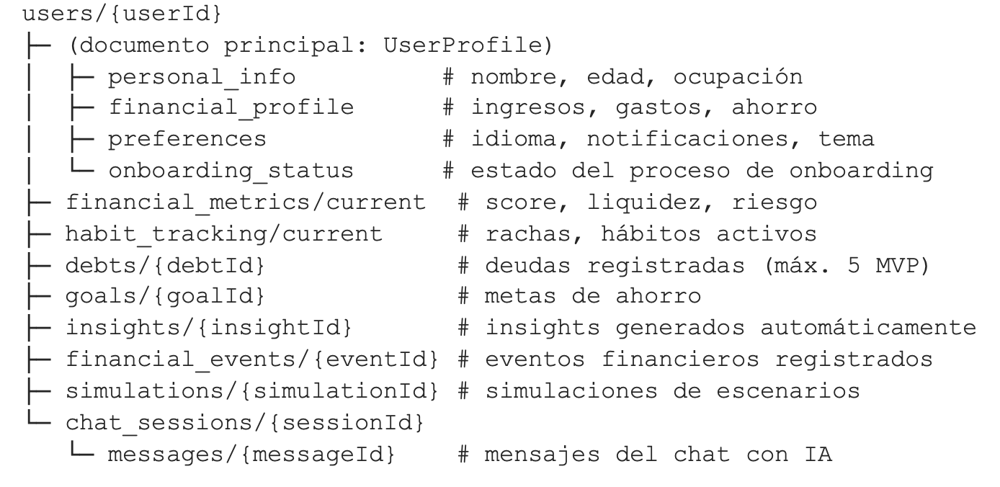
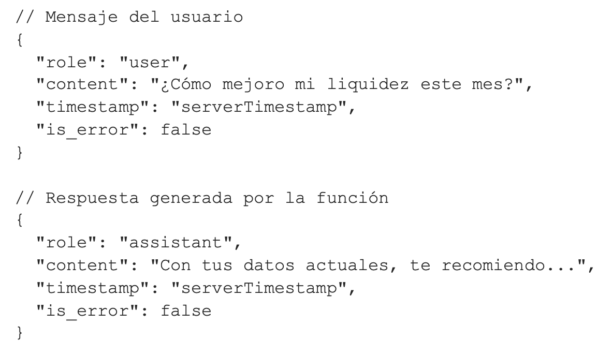

Índice General
- Resumen Ejecutivo
- Introducción y Contexto del Problema
- Descripción de la Solución
- Educación e Inclusión Financiera
- Impacto e Innovación
- Misión, Visión y Mercado
- Arquitectura del Sistema
- Stack Tecnológico
- Organización del Repositorio
- Módulos del Frontend
- Modelo de Datos
- Flujo del Chatbot
- Documentación de APIs
- Seguridad
- Escalabilidad
- Mérito Técnico
- Viabilidad
- Roadmap
- Riesgos
- KPIs
- Conclusiones
- Referencias
1. Resumen Ejecutivo
FINBOT es una plataforma móvil inteligente de gestión y educación financiera personal, diseñada para democratizar el acceso a orientación financiera de calidad entre jóvenes mexicanos. El proyecto combina un motor financiero determinista, un asistente conversacional impulsado por inteligencia artificial generativa (Gemini de Google), y una experiencia de usuario gamificada para transformar la manera en que las personas comprenden, gestionan y mejoran su salud financiera.
La arquitectura del sistema se sustenta en Flutter como framework multiplataforma para el frontend, Firebase como backend-as-a-service (autenticación, base de datos en tiempo real, almacenamiento y funciones serverless) y la API de Gemini para la generación de respuestas contextualizadas del asistente financiero. Esta combinación permite una solución escalable, de bajo costo operativo inicial y con capacidad de evolución continua.
El presente documento constituye la documentación técnica profesional y completa del proyecto. Abarca desde la propuesta de valor y la viabilidad del proyecto hasta la arquitectura detallada, el modelo de datos, los flujos de integración con IA, las políticas de seguridad, el roadmap de ejecución y las métricas de seguimiento. Está dirigido a evaluadores técnicos, stakeholders y cualquier interesado en comprender tanto el qué como el cómo de FINBOT.
| Aspecto | Detalle |
|---|---|
| Producto | Aplicación móvil de gestión y educación financiera con IA |
| Público objetivo | Jóvenes mexicanos 18-30 años, estudiantes y primeros empleos |
| Stack principal | Flutter + Firebase + Gemini API |
| Modelo de IA | Gemini (IA generativa contextual) |
| Estado actual | MVP funcional con flujo completo de chat, onboarding, dashboard y gestión de deudas |
| Diferenciador clave | Asesoría financiera personalizada con IA contextual, no genérica |
2. Introducción y Contexto del Problema
2.1 Problemática identificada
En México, más del 56% de la población adulta carece de acceso efectivo a herramientas de gestión financiera personal, según la Encuesta Nacional de Inclusión Financiera (ENIF) publicada por el INEGI. Millones de personas toman decisiones económicas críticas —desde el pago de deudas hasta la planeación de metas de ahorro— sin contar con diagnósticos claros, simulaciones de escenarios ni orientación personalizada. Esta carencia perpetúa ciclos de endeudamiento, estrés financiero y exclusión económica que afectan de forma desproporcionada a los sectores más jóvenes de la sociedad.
2.2 Limitaciones de soluciones existentes
Las soluciones existentes en el mercado, como hojas de cálculo, aplicaciones bancarias básicas o asesorías presenciales, presentan limitaciones significativas: requieren conocimientos previos, carecen de personalización real o resultan económicamente inaccesibles para gran parte de la población objetivo. El resultado es un ecosistema financiero donde la información relevante existe, pero no llega de forma comprensible ni oportuna a quienes más la necesitan.
- Hojas de cálculo: requieren conocimiento técnico y disciplina constante.
- Aplicaciones bancarias: solo muestran saldo y movimientos sin análisis financiero.
- Asesoría presencial: costo elevado, acceso limitado y sin seguimiento continuo.
- Apps genéricas: categorizan gastos pero no asesoran.
2.3 La oportunidad
FINBOT nace para dar solución a este problema. Se trata de una plataforma móvil inteligente que combina IA generativa, análisis financiero personalizado y una experiencia de usuario pensada para la inclusión y aprendizaje enfocada a la población que carece de información financiera en México. Fomentando la curiosidad a través de una aplicación interactiva y autodidacta, acompañado de un asistente conversacional basado en Gemini de Google. FINBOT transforma datos financieros individuales en recomendaciones claras, simulaciones interactivas y acompañamiento continuo, democratizando el acceso a la educación y la salud financiera.
3. Descripción de la Solución
FINBOT es una aplicación multiplataforma desarrollada en Flutter que opera como una aplicación educativa con modos de aprendizaje en cada sección de la interfaz, además de ser impulsado por un asistente financiero personal basado en inteligencia artificial generativa. La plataforma integra cuatro pilares funcionales que, en conjunto, ofrecen una experiencia integral de gestión financiera:
3.1 Diagnóstico financiero automatizado
Desde el proceso de onboarding, FINBOT recopila información clave del usuario —ingresos, gastos recurrentes, deudas vigentes y metas de ahorro— para calcular métricas objetivas como el nivel de riesgo y la capacidad de pago. Este diagnóstico sirve como base para todas las recomendaciones posteriores, eliminando la subjetividad y brindando un estado financiero real.
3.2 Asistente conversacional con IA
El corazón de FINBOT es su chat inteligente, donde el usuario puede plantear preguntas financieras en lenguaje natural. La arquitectura event-driven garantiza que cada mensaje enviado active automáticamente una Cloud Function que consulta el perfil completo del usuario —incluyendo métricas actualizadas, hábitos y contexto financiero— para generar una respuesta personalizada mediante la API de Gemini. El resultado es un asesor que no solo responde, sino que comprende la situación particular de cada persona.
3.3 Seguimiento de hábitos y metas
FINBOT permite registrar y monitorear hábitos financieros positivos, así como establecer metas de ahorro con plazos definidos. El dashboard en tiempo real presenta los avances mediante indicadores visuales e insights generados automáticamente, convirtiendo la gestión financiera en un proceso continuo y motivador.
3.4 Gestión inteligente de deudas
El módulo de deudas permite al usuario registrar sus compromisos financieros activos y recibir recomendaciones estratégicas sobre priorización de pagos, simulación de adelantos y proyección de fechas de liquidación. El sistema limita el registro a cinco deudas activas en su versión MVP para mantener la experiencia enfocada y procesable.
3.5 Registro de gastos y aprendizaje
FINBOT incorpora un modo de aprendizaje que permite al usuario registrar sus gastos diarios y recibir retroalimentación inmediata sobre el impacto de cada decisión en su salud financiera. Este módulo combina el registro transaccional con micro-lecciones contextualizadas, donde cada gasto registrado se convierte en una oportunidad de aprendizaje. El asistente de IA analiza patrones de gasto y ofrece sugerencias proactivas para optimizar el uso del ingreso.
3.6 Videos educativos
La plataforma incluye una sección dedicada a contenido de video educativo sobre finanzas personales. Los videos cubren temas fundamentales como ahorro, inversión, manejo de deudas, presupuesto y planificación financiera, presentados de manera accesible y adaptados al perfil del usuario. Este contenido complementa la orientación personalizada del chatbot, ofreciendo una experiencia de aprendizaje multimedia que refuerza los conceptos clave de educación financiera.
4. Educación e Inclusión Financiera
FINBOT responde directamente al reto de desarrollar soluciones tecnológicas que fortalezcan la educación financiera e impulsen la inclusión financiera, facilitando el acceso a información clara, herramientas digitales y experiencias de aprendizaje que ayuden a estudiantes y jóvenes a tomar mejores decisiones económicas y ampliar sus oportunidades de desarrollo personal y profesional.
4.1 Fortalecimiento de la educación financiera
FINBOT transforma la educación financiera de un ejercicio teórico a una experiencia práctica y aplicada. En lugar de presentar contenido genérico desconectado de la realidad del usuario, la plataforma enseña conceptos financieros en el momento exacto en que el usuario los necesita: al evaluar un crédito, al decidir entre ahorrar o invertir, al analizar si puede asumir un gasto extraordinario.
- El asistente con IA traduce métricas técnicas (ratio de liquidez, índice de endeudamiento, capacidad de ahorro) a explicaciones comprensibles para cualquier nivel de alfabetización financiera.
- Las simulaciones a distintos horizontes de tiempo permiten al usuario visualizar consecuencias y aprender por experimentación segura, sin arriesgar dinero real.
- El sistema de gamificación con score financiero educativo, rachas de hábitos y refuerzos positivos convierte el aprendizaje financiero en una experiencia participativa.
- El onboarding guiado captura el perfil financiero del usuario y le devuelve un diagnóstico inicial que funciona como punto de partida educativo.
4.2 Impulso a la inclusión financiera
FINBOT democratiza el acceso a orientación financiera de calidad. Históricamente, contar con un asesor financiero personal ha sido un privilegio reservado a personas con patrimonio elevado. FINBOT elimina esa barrera al ofrecer un copiloto inteligente disponible en cualquier momento, desde un dispositivo móvil, sin costo de asesoría y sin necesidad de conocimientos previos.
- Facilita el acceso a información clara: toda recomendación se presenta en lenguaje natural, directo y sin jerga técnica innecesaria.
- Proporciona herramientas digitales accesibles: la app multiplataforma permite que cualquier persona con un smartphone pueda diagnosticar su salud financiera.
- Genera experiencias de aprendizaje significativas: cada decisión simulada y cada insight generado aporta conocimiento aplicable.
- Ayuda a estudiantes y jóvenes a tomar mejores decisiones económicas al intervenir en etapas tempranas de la vida financiera.
- Amplía oportunidades de desarrollo personal y profesional al reducir el estrés financiero que limita productividad y bienestar.
4.3 Habilitación tecnológica
La combinación de un motor financiero determinista, un asistente de inteligencia artificial contextual y una capa de gamificación responsable permite que FINBOT enseñe de forma adaptativa, prevenga errores antes de que ocurran y acompañe al usuario en su crecimiento financiero. La arquitectura basada en Flutter, Firebase y Gemini garantiza escalabilidad, accesibilidad multiplataforma y capacidad de evolución continua.
5. Impacto e Innovación
5.1 Impacto Social
FINBOT atiende una problemática crítica y transversal: la falta de educación financiera práctica entre jóvenes y personas que inician su vida económica. El proyecto se distingue por su capacidad de llegar a una población amplia con una solución cotidiana, móvil y fácil de usar.
| Indicador | Impacto estimado |
|---|---|
| Población objetivo | Jóvenes mexicanos en etapa de formación económica y primer acceso a productos financieros |
| Problema que resuelve | Decisiones financieras mal informadas, ausencia de simulación y baja comprensión del impacto económico personal |
| Valor social | Promueve prevención, aprendizaje continuo e inclusión financiera responsable |
5.2 Innovación Tecnológica
A diferencia de las aplicaciones financieras convencionales que se limitan a mostrar saldos o categorizar gastos, FINBOT introduce un paradigma conversacional donde la inteligencia artificial no actúa como un chatbot genérico, sino como un asesor que conoce en profundidad el contexto financiero del usuario. Cada respuesta del asistente se genera a partir de un prompt enriquecido con datos reales actualizados en tiempo real desde Firestore.
5.3 Democratiización del Acceso a la Información Financiera
La arquitectura multiplataforma de Flutter permite que FINBOT llegue a usuarios de Android, iOS, web y escritorio con una sola base de código, eliminando barreras de acceso tecnológico. Combinado con una interfaz diseñada para la claridad y la accesibilidad, FINBOT permite que cualquier persona, sin importar su nivel de conocimiento financiero previo, pueda beneficiarse de un diagnóstico y acompañamiento de calidad profesional.
6. Misión, Visión y Segmento de Mercado
6.1 Misión
Transformar la relación de las personas con sus finanzas personales mediante tecnología inteligente y accesible, proporcionando diagnósticos claros, recomendaciones personalizadas y acompañamiento continuo que impulsen decisiones económicas informadas y responsables.
6.2 Visión
Ser la plataforma líder en asistencia financiera basada en inteligencia artificial en América Latina, reconocida por su capacidad para reducir la brecha de educación financiera y empoderar a millones de usuarios en la construcción de su estabilidad económica.
6.3 Segmento de mercado
FINBOT se dirige principalmente a dos segmentos de la población mexicana:
- Estudiantes universitarios y jóvenes profesionales (18-30 años): personas en etapa de formación económica que necesitan establecer hábitos financieros saludables desde el inicio de su vida adulta.
- Trabajadores con ingresos medios y bajos (25-45 años): personas que manejan presupuestos ajustados, enfrentan decisiones de endeudamiento y buscan herramientas prácticas para mejorar su salud financiera sin costos adicionales.
7. Arquitectura del Sistema
FINBOT opera sobre una arquitectura distribuida y orientada a eventos, compuesta por tres capas principales que interactúan de forma desacoplada:
7.1 Capa de presentación (Frontend)
- Aplicación Flutter multiplataforma (Android, iOS, web, escritorio).
- Punto de entrada en lib/main.dart con gestión de autenticación, navegación y UI principal.
- Interfaz con temas claro/oscuro configurables mediante FinBotColors.
- Consumo de streams en tiempo real desde Firestore para dashboard, métricas e insights.
7.2 Capa de datos y persistencia
- Cloud Firestore como base de datos principal con sincronización en tiempo real.
- Servicio centralizado en lib/services/firestore_service.dart para todas las operaciones CRUD.
- Modelos de dominio en lib/models/*.dart con serialización snake_case para Firestore.
- Firebase Authentication para gestión de sesiones de usuario.
7.3 Capa backend (Event-driven)
- Cloud Function chatWithFinbot en functions/src/index.ts.
- Trigger automático mediante onDocumentCreated al crear mensajes de chat.
- Consulta de perfil de usuario y métricas financieras para construir prompt contextual.
- Invocación de Gemini API para generación de respuesta personalizada.
- Persistencia de respuesta del asistente en la misma subcolección de mensajes.
7.4 Diagrama de flujo general

8. Stack Tecnológico
La elección de cada componente del stack responde a criterios de velocidad de desarrollo, escalabilidad, costo operativo y madurez del ecosistema:
| Capa | Tecnología | Justificación |
|---|---|---|
| Frontend movil | Flutter / Dart SDK ^3.11.1 | Framework multiplataforma con rendimiento nativo y una sola base de código para Android, iOS, Web y Desktop. |
| Autenticación | Firebase Authentication | Gestión segura de sesiones con soporte para email/password, Google Sign-In y otros proveedores. |
| Base de datos | Cloud Firestore | Base de datos NoSQL en tiempo real con sincronización automática, reglas de seguridad por usuario y escalamiento gestionado. |
| Backend serverless | Firebase Functions v2 + TypeScript + Node.js 22 | Arquitectura serverless escalable |
| IA generativa | @google/generative-ai (Gemini API) | Motor de IA que produce respuestas financieras contextualizadas a partir del perfil y métricas del usuario. |
9. Organización del Repositorio

10. Módulos Funcionales del Frontend
| Módulos | Clases / Páginas | Responsabilidad |
|---|---|---|
| Bootstrap y Tema | main(), FinBotApp, FinBotColors | Inicializa Firebase, define temas claro/oscuro y configura MaterialApp. |
| Acceso y Autenticación | AuthWrapper, LoginPage, RegisterPage | Gestiona sesión con Firebase Auth y redirige según estado del usuario. |
| Onboarding | OnboardingPage | Captura datos personales y financieros iniciales, calcula score y riesgo base. |
| Dashboard | DashboardPage | Consume streams de usuario, métricas, hábitos e insights en tiempo real. |
| Perfil | ProfilePage | Edición de campos del perfil y preferencias con persistencia parcial. |
| Asistente IA Chatbot | FinBotChatPage | Crea sesión de chat, envía mensajes y escucha respuestas desde Firestore. |
| Registro de Gastos | ExpenseTrackerPage | Registro diario de gastos con categorización y retroalimentación del asistente. |
| Videos Educativos | EducationalVideosPage | Sección de contenido de video sobre finanzas personales organizado por temas. |
11. Modelo de datos Firebase
La estructura de datos sigue un modelo jerárquico centrado en el usuario, donde cada documento principal contiene subcolecciones organizadas por dominio funcional:

El servicio FirestoreService concentra todas las operaciones sobre esta estructura, y los modelos en lib/models mantienen consistencia de serialización con claves en snake_case para garantizar un intercambio predecible entre cliente y backend.
12. Flujo del Chatbot con Inteligencia Artificial
El flujo conversacional entre el usuario y el asistente financiero sigue un patrón event-driven que garantiza respuestas personalizadas y en tiempo real:
- 1. La aplicación crea o reutiliza la sesión default_session para el usuario autenticado.
- 2. Cuando el usuario envía un mensaje, se crea un documento en la subcolección messages con role = "user".
- 3. La Cloud Function chatWithFinbot se dispara automáticamente mediante el trigger onDocumentCreated.
- 4. La función consulta el perfil completo del usuario: personal_info, financial_profile, preferences y financial_metrics/current.
- 5. Con toda la información contextual, se construye un prompt enriquecido que incluye el historial de conversación.
- 6. Se invoca la API de Gemini con el prompt contextualizado para generar la respuesta.
- 7. La respuesta del asistente se persiste como un nuevo documento con role = "assistant" en la misma subcolección.
- 8. La aplicación Flutter, al escuchar el stream de mensajes, renderiza la respuesta en tiempo real.
12.1 Construcción del prompt contextual
El prompt enviado a Gemini no es genérico. Se construye dinámicamente incluyendo:
- Datos personales del usuario (nombre, edad, ocupación).
- Perfil financiero completo (ingresos mensuales, gastos fijos, nivel de ahorro).
- Métricas financieras actuales (score, ratio de liquidez, índice de endeudamiento).
- Preferencias del usuario (idioma, estilo de comunicación).
- Historial reciente de la conversación para mantener coherencia.
Este enfoque garantiza que cada respuesta sea específica, relevante y accionable para la situación financiera real del usuario, diferenciándose radicalmente de los chatbots genéricos.
13. Documentación de APIs
13.1 Api Backend (Cloud Functions)
| Nombre | Tipo | Disparador | Archivo |
|---|---|---|---|
| chatWithFinbot | Event-driven (Firestore Trigger) | onDocumentCreated("users/{userId}/chat_sessions/{sessionId}/messages/{messageId}") | functions/src/index.ts |
Propósito: generar respuestas del asistente financiero usando Gemini en función del contexto del usuario y el historial de chat.
13.2 Contrato de entrada/salida del chat
| Elemento | Campos clave | Notas |
|---|---|---|
| Entrada (mensaje del usuario) | role, content, timestamp, is_error | Solo se procesa cuando role === "user" y no hay error. |
| Salida (respuesta del asistente) | role: "assistant", content, timestamp, is_error | La función escribe el mensaje de respuesta en la misma subcolección. |
| Contexto adicional | personal_info, financial_profile, preferences, financial_metrics/current | Se consulta para personalizar el prompt y la recomendación financiera. |
13.3 Ejemplos de payloads

13.4 APIs de datos (capa de aplicación)
La app consume APIs gestionadas por el SDK de Firebase. No expone endpoints REST propios:
| Grupo | Operaciones principales | Referencia |
|---|---|---|
| Autenticación | authStateChanges, signInWithEmailAndPassword, signOut | lib/main.dart |
| Usuarios / Perfil | saveUser, saveUserRaw, streamUser, getUser | lib/services/firestore_service.dart |
| Métricas y Hábitos | streamMetrics, updateMetrics, streamHabitTracking, updateHabitTracking | lib/services/firestore_service.dart |
| Gestión Financiera | streamDebts, addDebt, deleteDebt, streamGoals, saveGoal | lib/services/firestore_service.dart |
| Insights y eventos | streamInsights, markInsightAsRead, streamFinancialEvents, addFinancialEvent | lib/services/firestore_service.dart |
| Chatbot | createChatSession, sendMessage, streamChatMessages | lib/services/firestore_service.dart |
13.5 Manejo de errores y limites
- Función de chat: en caso de error escribe mensaje fallback con is_error: true.
- Límite MVP: addDebt valida un máximo de 5 deudas activas por usuario.
- Escalado: chatWithFinbot define maxInstances: 10 para controlar concurrencia.
14. Seguridad
14.1 Firestore Security Rules
Las reglas de Firestore restringen el acceso mediante la validación request.auth.uid == userId, lo que garantiza aislamiento multiusuario completo. Cada usuario solo puede leer y escribir en su propio documento y subcolecciones.
14.2 Storage Rules
Las reglas de Firebase Storage actualmente presentan una apertura temporal hasta 2026-04-07 que representa un riesgo alto de seguridad. Se recomienda endurecer estas reglas antes de la fecha de vencimiento, implementando permisos basados en usuario y ruta específica.
14.3 Gestión de secretos
- La Cloud Function utiliza el secreto GEMINI_API_KEY gestionado por Firebase Secrets, evitando exponer la llave en el código TypeScript.
- • Las credenciales de Firebase Web están embebidas en el código cliente, práctica estándar pero recomendable de gestionar por ambientes (dev/stg/prod).
15 Escalabilidad
La arquitectura de FINBOT ha sido diseñada con escalabilidad como principio rector. La combinación de Flutter en el frontend, Firebase como backend-as-a-service y Cloud Functions como capa de procesamiento serverless permite que la plataforma crezca de manera orgánica sin necesidad de reescribir componentes fundamentales.
15.1 Arquitectura modular y orientada a eventos
El sistema sigue un patrón event-driven donde las interacciones del usuario generan documentos en Firestore que disparan automáticamente funciones de backend. Esta separación de responsabilidades permite escalar cada capa de forma independiente.
15.2 Escalabilidad funcional
Desde la perspectiva funcional, el producto puede escalar desde un uso individual hasta esquemas de adopción con universidades, programas de inclusión e instituciones financieras. El mismo núcleo de cálculo puede reutilizarse y parametrizarse para distintos contextos.
16. Mérito Técnico
La fortaleza técnica de FINBOT reside en la integración ordenada de componentes que cumplen funciones distintas pero complementarias:
- Capa de experiencia: interfaz Flutter clara, ligera e intuitiva.
- Capa lógica: motor financiero determinista con métricas objetivas de liquidez, deuda, ahorro y riesgo.
- Capa inteligente: asistente IA contextual que explica resultados sin romper coherencia con el análisis numérico.
- Capa de datos: Firestore con sincronización en tiempo real y modelo jerárquico centrado en el usuario.
El acoplamiento entre cálculo técnico y lenguaje natural es uno de los principales méritos del proyecto, porque convierte un resultado financiero complejo en una recomendación entendible y accionable.
17. Viabilidad del proyecto
17.1 Viabilidad técnica
FINBOT se construye sobre tecnologías probadas y ampliamente adoptadas. Flutter cuenta con soporte oficial de Google. Firebase ofrece un modelo de costos escalable con generosas cuotas gratuitas para MVPs. Gemini proporciona IA generativa de frontera sin necesidad de entrenar modelos propios, reduciendo significativamente esfuerzo y costos operativos.
17.2 Viabilidad operativa
La arquitectura serverless elimina la necesidad de gestionar infraestructura dedicada. Los despliegues automatizados mediante Firebase CLI y la compilación integrada reducen fricción operativa. El modelo event-driven simplifica la adición de nuevas funcionalidades.
17.3 Viabilidad de mercado
La ENSAFI del INEGI evidencia que una proporción significativa de la población mexicana experimenta estrés financiero y carece de herramientas adecuadas. FINBOT se posiciona en un segmento de alta demanda y baja oferta: asistencia financiera personalizada con IA, accesible desde dispositivos móviles y sin costo para el usuario final en su versión básica.
18. Roadmap de ejecución
18.1 Fase 1: Asegurar y estabilizar
- Endurecer storage.rules con permisos específicos por usuario/ruta.
- Agregar logging estructurado con correlation IDs en Cloud Functions.
- Actualizar documentación técnica y operativa alineada al código.
- Implementar pruebas unitarias base para modelos y servicios clave.
18.2 Fase 2: Modularizar
- Separar lib/main.dart por módulos: auth/, onboarding/, dashboard/, chat/.
- Dividir FirestoreService en servicios por dominio (usuario, métricas, deudas, metas, chat).
- Definir e implementar índices Firestore según consultas reales.
- Agregar pruebas para la capa de servicios.
18.3 Fase 3: Escalar
- Introducir gestión de estado consistente (Riverpod o Bloc).
- Pipeline CI automatizada: lint + test + build.
- Versionado de prompts y controles de calidad del chat IA.
- Dashboard de observabilidad (errores, latencia, uso).
19. Riesgos y Mitigaciones
| Riesgo | Nivel | Impacto | Mitigación |
|---|---|---|---|
| Reglas de Storage temporalmente abiertas | Alto | Exposición de datos y riesgo reputacional | Cerrar reglas por usuario/path y validar accesos |
| Monolito UI en main.dart | Medio | Menor velocidad de cambios y más errores | Refactor incremental por módulos de negocio |
| Sin índices definidos para crecimiento | Medio | Degradación de consultas y costos operativos | Diseñar e implementar índices Firestore |
| Cobertura de pruebas limitada | Medio | Regresiones silenciosas y ciclos de corrección caros | Suite mínima de unit tests + pipeline CI |
| Costos de IA por mayor uso | Medio | Incremento de costos operativos | Cuotas, guardrails de prompt y límites por sesión |
| Consultas Firestore lentas al crecer datos | Alto | Degradación de experiencia de usuario | Índices compuestos y revisión periódica de consultas |
20. KPIs de Seguimiento
- Velocidad de entrega: lead time por feature (objetivo: tendencia descendente).
- Calidad: defectos post-release por sprint (objetivo: reducción sostenida).
- Confiabilidad: errores críticos en chat/backend por semana.
- Seguridad: cumplimiento 100% de reglas de acceso sin excepciones abiertas.
- Escalado: latencia p95 en operaciones críticas de datos.
- Adopción: usuarios activos diarios y tasa de retención semanal.
- Efectividad pedagógica: mejora promedio del score financiero por usuario activo.
21. Conclusiones
FINBOT representa una propuesta sólida, viable y de alto impacto social para abordar la brecha de educación e inclusión financiera entre los jóvenes mexicanos. La combinación de un motor financiero determinista, un asistente conversacional impulsado por inteligencia artificial generativa (Gemini) y una experiencia de usuario gamificada posiciona al proyecto como una solución innovadora que va más allá de las aplicaciones financieras convencionales.
Desde la perspectiva técnica, la arquitectura basada en Flutter, Firebase y Cloud Functions proporciona una base escalable, de bajo costo operativo y con capacidad de evolución continua. El modelo event-driven y la integración contextual con Gemini garantizan que las recomendaciones sean personalizadas, relevantes y accionables para cada usuario.
El MVP actual demuestra un flujo completo y funcional que incluye onboarding, dashboard en tiempo real, gestión de deudas, seguimiento de hábitos y chat con IA. El roadmap de 90 días establece una ruta clara para madurar la plataforma en seguridad, modularidad, calidad de código y observabilidad, preparándola para su siguiente fase de crecimiento.
FINBOT no es únicamente una herramienta de consulta financiera: es un ecosistema de aprendizaje y decisión diseñado para cerrar la brecha de educación e inclusión financiera, utilizando tecnología accesible, inteligencia artificial responsable y una experiencia centrada en el usuario.
23. Referencias
- 9. INEGI. Encuesta Nacional de Inclusión Financiera (ENIF), edición más reciente consultada para contextualizar el problema de acceso y uso de productos financieros en México.
- 10. INEGI. Encuesta Nacional sobre Salud Financiera (ENSAFI), utilizada como referencia para comprender hábitos, estrés financiero y capacidad de respuesta económica de la población.
- 11. Banco de México y materiales de educación financiera de instituciones públicas y privadas, considerados como marco de referencia para la pertinencia del proyecto.
- 12. CONDUSEF. Programas de educación financiera y estadísticas sobre quejas y reclamaciones de usuarios de servicios financieros en México.
- 13. Google. Documentación oficial de Flutter, Firebase y Gemini API, consultada como referencia técnica para la implementación de la arquitectura del proyecto.
- 14. Google. Documentación de Cloud Firestore Security Rules y Firebase Authentication para la implementación de políticas de acceso.
- 15. Dart/Flutter Team. Guías oficiales de arquitectura de aplicaciones Flutter y patrones de gestión de estado.